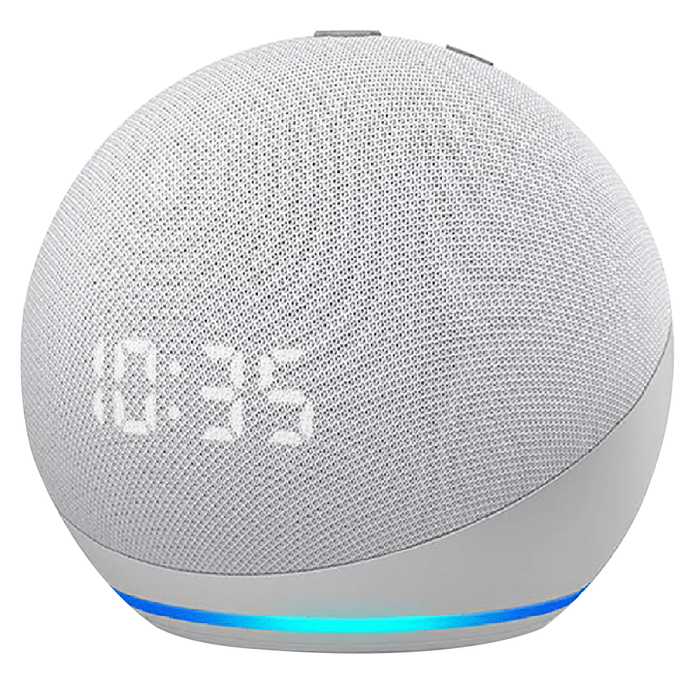

¿Porque lo elegi?
Decidi elegir este dispositivo debido a que me parece un dispositivo bastante util para todo el mundo ya que facilita tu dia a dia relacionado con temas de internet y tambien es de una gran ayuda para las personas con discapacidades fisicas esto debido a que si una persona tiene algun problema fisico y esto le dificulta la elaboracion de algunas cosas como poner su serie favorita etc pues alexa le es de gran ayuda, a parte alexa tambien tiene otras funciones muy interesantes si dispones de una casa la cual se pueda conectar a ella como por ejemplo que disponga de poder encender y apagar las luces, bajar persianas... todo esto hace que sea mucho mas facil nuestro dia a dia y nos facilite la interacion entre persona y ordenador.
¿Cuando se creo Alexa?
En noviembre de 2014, Amazon anunció Alexa junto a Echo. Para crear a Alexa se inspiraron en la voz del ordenador y el sistema de conversación a bordo del Starship Enterprise en series de televisión y películas de ciencia ficción, comenzando con Star Trek The Original Series i Star Trek The Next Generation. Se eligió el nombre Alexa porque "x" tiene una consonante dura, lo que facilita la comprensión por parte del asistente. En junio de 2015, Amazon anunció Alexa Found, un plan para revolucionar las empresas que desarrollan tecnología de control por voz. En 2016 se creó el Premio Alexa para promover la tecnología y su entorno.
En enero de 2017, se celebró el evento inaugural de Alexa en Nashville, Tennessee, una reunión internacional exclusiva de desarrolladores y fanáticos de Alexa. 2 3 4. En mayo de 2018, Amazon anunció que Alexa se instalaría en 35.000 hogares construidos por Lennar Corporation este año. En noviembre de 2018, Amazon anunció que Alexa estaría disponible en México a través de dispositivos Echo (Echo, Echo Dot, Echo Plus) y la aplicación Alexa.
¿Porque se llamo Alexa?
Amazon eligió el nombre Alexa por varias razones. En primer lugar porque era un nombre facil de recordar y utilizar. Otro motivo fue por ser único y famoso, famoso entre otros nombres utilizados en tecnología. Esto permite a Amazon crear su propia experiencia de asistente de voz y diferenciarse de la competencia.
Otra razón importante para elegir el nombre "Alexa" fue su conexión con la Biblioteca de Alejandría. Al combinar el nombre Alexa con la Biblioteca de Alejandría, Amazon espera transmitir la idea de que su asistente de voz es una fuente de conocimiento e información disponible para los usuarios en su vida diaria.
Beneficios y Desventajas
Alexa puede controlar varios dispositivos inteligentes que sean compatibles con este sistema, como bombillos, cornetas, cámaras de seguridad e interruptores inteligentes. Los usuarios pueden extender las habilidades de Alexa creando rutinas para automatizar sus dispositivos inteligentes en función de un comando de voz, hora o ubicación.
Las funciones de Alexa dependen de dos elementos. Están los comandos de voz que trae de fábrica, con los que puedes realizarle una gran variedad de requerimientos. Y luego están las habilidades, que son complementos que le puedes instalar para añadirle aún más funcionalidades. Con respecto a los comandos de voz, puedes hacerle muchos tipos de pregunta. Como por ejemplo, puedes pedirle información sobre diferentes tipos de contenido, clima, o que busque información acerca de ciertas cosas.
También te permite configurar alarmas, preguntar el día, crear recordatorios o iniciar cronómetros. Y también, como es de esperarse,También te deja hacer video llamadas entre diferentes dispositivos con Alexa o controlar otros dispositivos compatibles con el asistente.
A continuación hablare de algunas ventajas y desventajas que tiene Alexa en mi opinion:
| Beneficios | Desventajas |
|---|---|
| Uno de los beneficios es la ayuda que le puede dar a las personas con discapacidades o a las personas mayores, ya que Alexa puede ayudarles mucho en su dia a dia | Una de las desventajas es que necesitas obligatoriamente wi-fi para usarlo, esto es una desventaja devido a que la gente mayor que vive en el pueblo no suelen tener wi-fi y esto hace que Alexa no se pueda usar en esas zonas |
| Otra ventaja seria lo intuitivo que es ya que Alexa es muy facil de manejar y no necesitas apenas conocimiento de tecnologias para poder usarla | Otra desventaja es que para aprevechar todas las propiedades de Alexa necesitas una casa moderna ya con una casa antigua no se utilizarian algunas de las características mas importantes de Alexa |
| Para mi una de las ventajas mas importante es las posibilidades que da a futuro, ya que esto puede ser de gran utilidad en nuestro futuro y que nos ayude en gran medida en nuestro dia a dia | Una desventaja que realmente no es culpa de Alexa es que la gente le tiene miedo a este tipo de tecnologias debido a que se piensan en que en algun punto estas podrian sustituirnos en muchos trabajos y tareas |
Caracteristicas
Alexa es el asistente virtual desarrollado por Amazon, que se encuentra en dispositivos como los altavoces inteligentes Amazon Echo y una variedad de dispositivos de terceros. A continuación, hablaremos de algunas de las características y capacidades principales de Alexa: